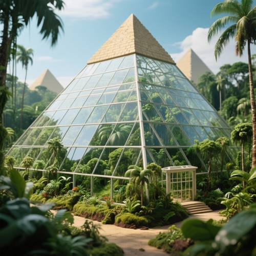
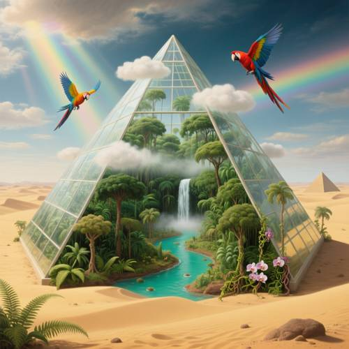

Relationship — A huge glass greenhouse shaped like the Great Pyramid of Giza contains
A huge glass greenhouse shaped like the Great Pyramid of Giza contains a complete and miniature Amazon rainforest ecosystem, and the overall surrealist style.

Direct — one call, no iteration

Continuum — Kimi K3 + Qwen-Image
Judge — Direct
PASSRelationship - Inclusion — The image shows a large glass greenhouse structure. Inside the transparent walls of the greenhouse, a dense collection of green, tropical plants and trees is visible, representing a rainforest ecosystem contained within the structure.
FAILStyle — The image is rendered in a photorealistic style. The lighting, textures, and depiction of the objects are natural and realistic, lacking the dream-like, distorted, or bizarre visual qualities characteristic of the surrealist style.
PASSWorld Knowledge — The image depicts a central structure shaped like a pyramid, and two stone pyramids are visible in the background, all of which are consistent with the form of the Great Pyramid of Giza. The vegetation shown, both inside and outside the greenhouse, is dense and tropical with various types of trees and plants, which is visually representative of an Amazon rainforest.
PASSRelationship - Similarity — The central structure in the image is a greenhouse made of glass panes and a metal frame. This greenhouse is constructed in the shape of a pyramid with a square base and four triangular faces, making it visually similar in shape to the Great Pyramid of Giza.
Judge — Continuum
PASSRelationship - Inclusion — The image shows a large, transparent, pyramid-shaped structure. Inside this structure is a lush, green environment with dense trees, plants, a river, and a waterfall, visually representing an Amazon rainforest ecosystem contained within a glass greenhouse.
PASSStyle — The image has a surrealist quality due to the illogical juxtaposition of elements. A complete rainforest ecosystem is contained within a glass pyramid that is situated in a vast desert. Clouds are depicted both inside and outside the greenhouse, and large, colorful parrots fly near the structure, creating a dream-like and unnatural scene.
PASSWorld Knowledge — The image incorporates knowledge of the Great Pyramid of Giza by depicting a large pyramid structure in a desert setting, with another smaller, traditional pyramid visible in the background. It also represents the Amazon rainforest through the dense tropical vegetation, river, waterfall, and the presence of macaw parrots, which are native to that region.
PASSRelationship - Similarity — The main structure in the image is a greenhouse, evidenced by its glass-paneled construction. The shape of this greenhouse is a large, four-sided pyramid, which is geometrically similar to the Great Pyramid of Giza.
What the agent did
Thinking
The user wants an image of: "A huge glass greenhouse shaped like the Great Pyramid of Giza contains a complete and miniature Amazon rainforest ecosystem, and the overall surrealist style." Per the benchmark policy, I should: 1. Use `qwen-image` model for all generation and editing calls 2. Generate first, then inspect, then edit iteratively 3. Mark best as I go 4. No seeds, no steps/guidance overrides Let me craft a rich visual prompt: - Huge glass greenhouse shaped like the Great Pyramid of Giza (pyramid shape, glass panels) - Contains a complete miniature Amazon rainforest ecosystem (dense jungle, river, waterfall, animals like parrots/jaguars maybe, mist, canopy layers) - Surrealist style (dreamlike, Dalí-esque, floating elements, impossible scale, ethereal lighting) Visual details to fill in: - Desert setting around the pyramid (like Giza plateau) makes the surreal contrast stronger - Golden desert sand vs lush green jungle inside - Sunlight refracting through glass - Mist/humidity visible inside - Maybe tiny birds flying inside, a winding river, waterfall - Surreal elements: clouds inside the pyramid, floating orbs, dreamlike sky, exaggerated scale Let me write a strong prompt: "A colossal glass greenhouse in the exact shape of the Great Pyramid of Giza, standing on golden desert sands, its transparent faceted glass panels revealing a complete miniature Amazon rainforest ecosystem thriving inside: dense emerald jungle canopy, a winding turquoise river with a small waterfall, drifting mist and tiny clouds floating beneath the glass apex, colorful macaws in flight, lush ferns and vines. Surrealist style, dreamlike atmosphere, soft ethereal golden light refracting through the glass, impossible scale contrast between the arid desert and the humid miniature jungle, painterly surrealism reminiscent of Dalí and Magritte, dramatic sky with strange clouds, ultra-detailed." Aspect: probably landscape (wider) to show pyramid in desert. The policy says sizes are controlled by harness, but I can still pass width/height? It says "Do not set a seed. Sizes and seeds are controlled by the harness." Hmm — maybe I shouldn't set width/height either? It says sizes are controlled by the harness — meaning the harness sets them. I'll omit width/height to let the harness control them. Default is 1024x1024. Actually, the instruction says "Sizes and seeds are controlled by the harness" — safest to not pass them. Let me generate.
Model
I'll generate this surreal pyramid greenhouse scene, then inspect and refine it.
Step 1 — `generate_image`
{
"prompt": "A colossal glass greenhouse built in the exact shape of the Great Pyramid of Giza, standing on golden desert sands under a dramatic dreamlike sky. Its transparent faceted glass panels reveal a complete miniature Amazon rainforest ecosystem thriving inside: dense emerald jungle canopy with layered treetops, a winding turquoise river with a small waterfall, drifting mist and tiny clouds floating beneath the glass apex, colorful macaws flying between miniature trees, lush ferns, vines and orchids. Sunlight refracts through the glass creating soft prismatic light rays. Surrealist style, dreamlike atmosphere, impossible contrast between the arid desert outside and the humid miniature jungle inside, painterly surrealism reminiscent of Salvador Dal\u00ed and Ren\u00e9 Magritte, ultra-detailed, cinematic wide composition.",
"model": "qwen-image"
}
Result img_0
Thinking
The first generation is quite good. Let me inspect it against the prompt: 1. **Glass greenhouse shaped like the Great Pyramid of Giza** ✓ — a glass pyramid with visible panel framework, standing in desert. There's even the real Giza pyramid in the background for scale — nice surreal touch. 2. **Complete miniature Amazon rainforest ecosystem inside** ✓ — jungle canopy, waterfall, turquoise river, mist/clouds inside, ferns, orchids. 3. **Surrealist style** ✓ — dreamlike, rainbows, floating clouds inside glass, parrots... but wait, the macaws are flying OUTSIDE the pyramid. That's a bit odd but adds surrealism. Hmm — "contains a complete... ecosystem" — the parrots outside might slightly undermine the "contained ecosystem" idea, but it also adds surreal whimsy. It's acceptable and even charming — birds escaped/attracted adds narrative. Actually for prompt adherence, the ecosystem should be inside. The core elements (jungle, river, waterfall, mist) are inside. The two macaws outside are a minor deviation but they enhance the surreal look. Minor issues: - The pyramid's left and right glass faces look good; front face shows jungle spilling out at the base? The base front seems open with vegetation extending onto sand. Actually the jungle appears to extend out the front base onto the desert (river flows out?). Looking closely: the turquoise river flows toward the front and pools at the base edge — it appears to be inside. The vegetation at bottom-left front spills slightly outside the glass? There are ferns at bottom-left corner outside the pyramid on the sand. Surreal, fine. - The scale: the pyramid looks moderately sized vs "huge" — the background Giza pyramid gives a nice size cue. - Style is painterly, surreal — good. This is honestly a strong result already. The policy says "Good enough is a stop condition." All requested elements are present: - Glass pyramid greenhouse ✓ - Miniature Amazon rainforest ecosystem inside ✓ (canopy, river, waterfall, mist, clouds, orchids, ferns) - Surrealist style ✓ Could I improve? The macaws flying outside could arguably be inside for the "contained ecosystem" concept, but they're a delightful surreal accent. The prompt says "contains a complete and miniature Amazon rainforest ecosystem" — the ecosystem is contained; parrots outside don't negate it. One thing: "huge" — the pyramid reads as fairly large but a lone small structure; background pyramid gives scale. Fine. I think this is essentially done. Let me mark it best. Should I do any refinement? Maybe one consideration: the birds outside slightly conflict with "contained." But editing risks degrading a good result ("Don't over-edit good results"). The image matches every element of the prompt. I'll mark best and stop. Actually, let me double-check details via inspection? The policy says inspect for text — there's no text. The image looks coherent at full scale. Maybe zoom on the glass panels / apex for artifacts? The image looks clean. I'm confident. Mark best img_0 and summarize.
Step 2 — `mark_best`
{
"image": "img_0",
"reason": "All prompt elements are present and correct: glass pyramid greenhouse in Giza-like desert, complete miniature Amazon ecosystem inside (canopy, river, waterfall, mist, orchids), and a clear surrealist dreamlike style. Clean composition, no artifacts."
}
Thinking
The image is marked. I'm done — stopping here per the "good enough is a stop condition" policy. Provide a brief closing summary.
Model
The image is complete and marked as best. **Result:** A colossal glass greenhouse in the shape of the Great Pyramid of Giza rises from golden desert dunes, its gridded transparent panels revealing a thriving miniature Amazon rainforest inside — layered emerald canopy, a waterfall feeding a winding turquoise river, drifting mist and tiny clouds floating beneath the glass apex, orchids and ferns at the base. The surrealist character comes through in the impossible humid-jungle-in-the-desert contrast, the tiny clouds trapped under the glass, rainbows arcing through a dreamlike sky, two giant macaws soaring past, and the real Giza pyramid on the horizon as a wry scale reference. Every element the prompt asked for is present, so I stopped here rather than risk degrading a strong result.